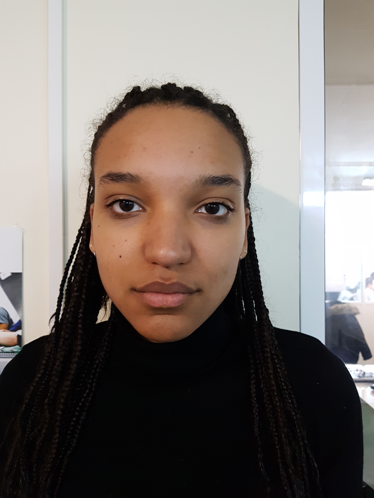
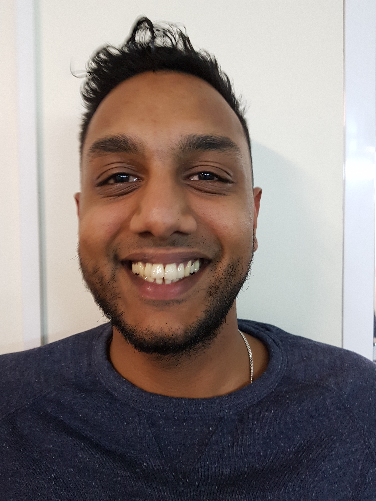
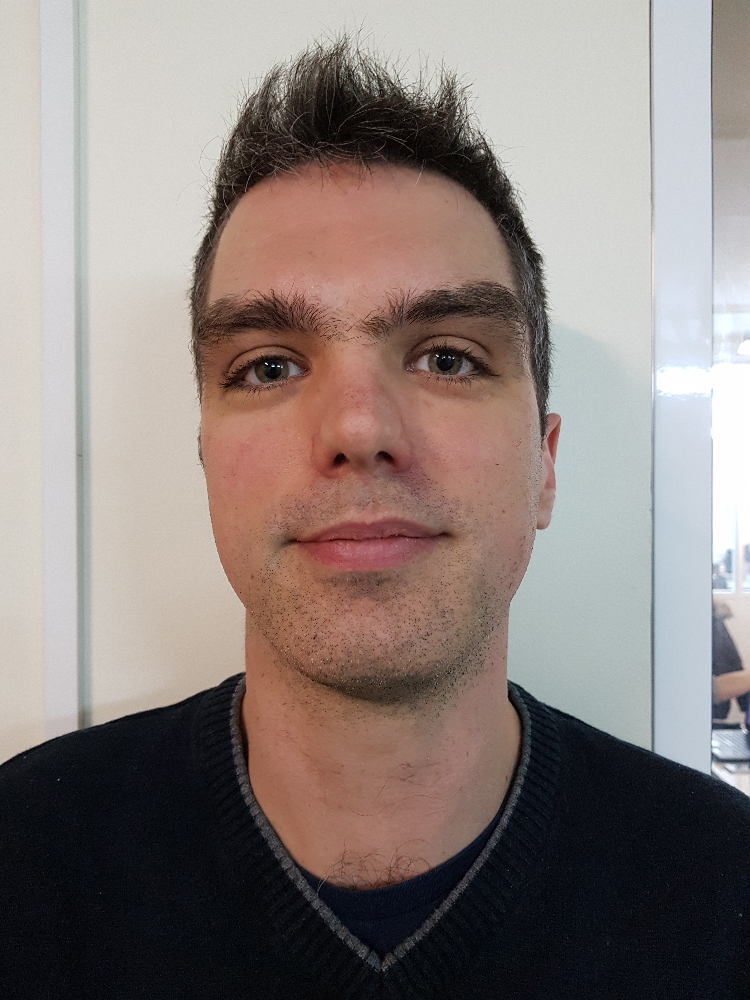
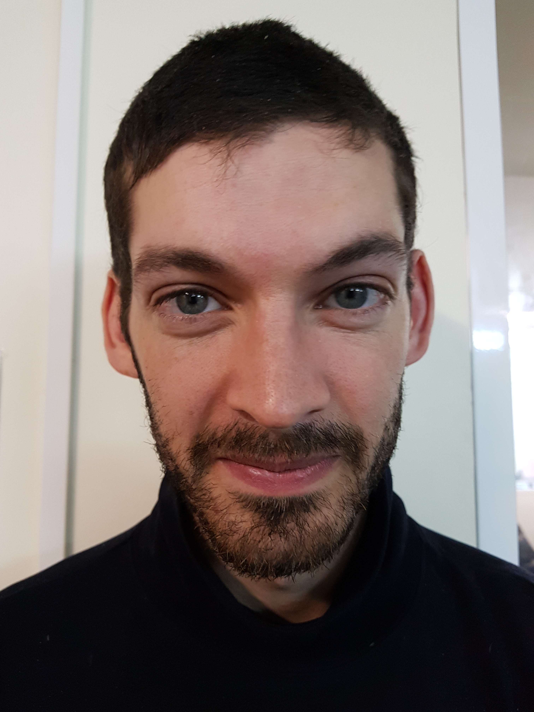

Vos témoignages
Jenna
"Groupe bien constitué du fait de personnalités très très variées; mais au niveau des apprenants,
la différence d'âge peut vite se faire ressentir. On a plus le temps de vivre, vie personnelle
à mettre de coté pour une période de 7 mois. Sur le plan apprentissage, une progression assez
floue, mais importante. On emmagasine des connaissances sans s'en rendre compte. Ce sacrifice de
7 mois est nécessaire et agréable quand on pense au futur qui nous attend dans l'univers du numérique."
Shadd
"Un très bon esprit de groupe, une bonne entente et entraide; Une formation gratuite qui permet
d'évoluer et d'aboutir à un contrat professionnel, CDI CDD. On a qu'un seul formateur ce qui peut
être difficile; il a une méthode d'apprentissage qui est assez particulière mais qui va faire ses
preuves (probablement, selon lui en tout cas ^^). Ça reste beaucoup trop intensif à gérer avec sa vie
privée (familles et amis), mais pour l'objectif que l'on vise, c'est un mal nécessaire pour réussir
et devenir un jour développeur web Full Stack."
Rodolphe (formateur)

"Je suis content d'être formateur, c'est intéressant et enrichissant. Je trouve ça passionnant de rencontrer des gens
qui sont prêts à faire des virages à 90 degrés par rapport à des envies ou changements de vie et j'estime que c'est un
honneur de participer à cette action: il y'a certes un effet de mode, et j'aspire à devenir développeur de jour en jour;
Le marketing nous fait croire qu'on peut tous devenir développeur, y'a bcp de formations et d'écoles qui jouent
dessus, or
c'est un investissement long et rigoureux. Donc pour moi c'est super fort, je le vis autant que les apprenants.
Les gens
souvent arrivent, ils savent pas utiliser leur ordinateur, et à la fin de la formation ils peuvent postuler à des
CDI et
reçoivent beaucoup d'annonces sur Linkedin. 7 mois c'est tout juste ce qu'il faut pour entrevoir le truc! C'est une
formation intensive mais ensemble on se donne le courage et les moyens pour partir en solo dans le monde professionnel."
Matthieu
"Je kiffe Simplon, les gens; j'étais venu à la base pour m'améliorer techniquement, je codais par
moi même mais pas professionnellement; donc j'avais besoin d'un cadre technique pour monter en
compétences. J'adore le web, les sites web et pour moi je Javascript s'adapte parfaitement à cela.
Ce que j'ai trouvé encore plus cool, c'est que lors des entretiens, on prend les gens sur leur motivation
et non sur le parcours professionnel et les préjugés qu'on peut avoir sur les gens en général lors d'un
entretien. Ce qui m'a étonné après avoir commencé cette aventure, c'est les personnes, leurs capacités
d'implication et le plaisir d'observer leur évolution."
Hugo
"Je suis content d'être à Simplon, je serais pas capable d'apprendre l'informatique seul ou à l'Ecole 42,
je pense qu'il faut un bon contexte pour un bon apprentissage. Je trouve qu'il y'a un bon niveau technique
à Simplon, et en même temps on a une sorte de liberté dans la façon d'organiser notre temps et de choisir
sur quoi on veut travailler. Les apprenants sont trop géniaux et je trouve que c'est "méga" important;
on se motive ensemble et du coup on a moins envie d'abandonner et on se sent moins nul, car on est pas seul.
Grâce à cette formation, j'en apprend plus sur moi et sur mon caractère: j'ai identifié plus précisément les
impacts de ma tendance à être obnubilé et passionné, car j'ai du recul dessus du fait que Simplon propose un
environnement sain(c'est pas absurde et inhumain comme le système scolaire classique) mais en même temps on est
bien guidé."